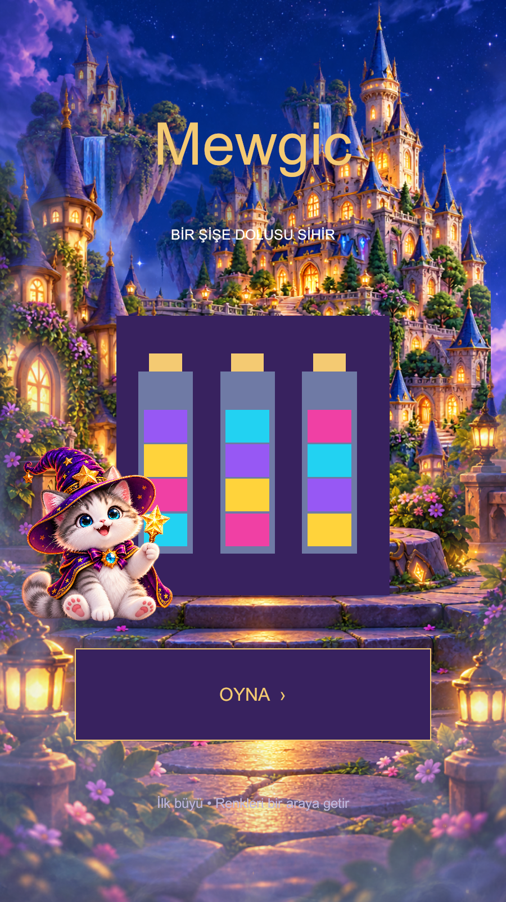

PART 03A — Görsel karşılaştırma
Sol: değişmez ana referans. Sağ: gerçek Home Play Mode, ayrı çevre katmanları ve mevcut etkileşimli prototip arayüzü. Karakter, şişeler ve OYNA tasarımı bu aşamada korunmuştur.
01_Home.png — hedef kompozisyon Unity Home — 900 × 1600
Unity Home — 900 × 1600
Mavi-mor atmosfer, sağdaki ana kale, soldaki köy, uçan adalar, sıcak pencereler, taş köprü ve çiçekli fenerli platform üretildi. Mimari referansın birebir geometrik kopyası değildir. Geçici şişe paneli merkez şelalelerin bir bölümünü kapatır. Logo ve alt metin kontrastı nihai UI aşamasında ele alınmalıdır.
9:19.5 · 9:20 · Güvenli alan simülasyonu